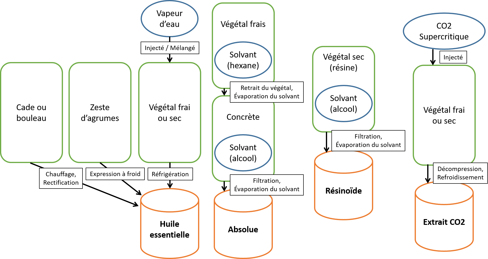
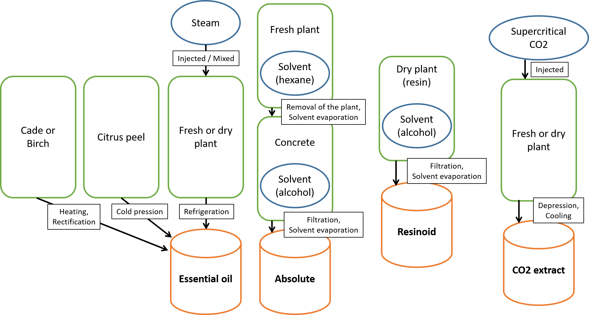

Notre site internet utilise des cookies à des fins de statistiques, de perfomances et de sécurité. Ces données anonymes nous permettent de vous offrir une expérience de navigation optimale. Vous pouvez toutefois désactiver les cookies dans les paramètres de votre navigateur.
Our website is using cookies for statistics, performance and security. These anonymous data allow us to give you an optimal navigation experience. You still can disable the cookies in your navigator’s parameters.
LES INGREDIENTS DE NOS PARFUMS PERFUME INGREDIENTS
Comment sont fabriqués les ingrédients qui composent nos parfums ? Du naturel au synthétique, découvrez comment sont faits vos parfums. How are perfume ingredients made ? From natural to synthetic ingredients, discover how perfumes are made.
Dans la composition d’un parfum, il est possible d’utiliser environ 3000 ingrédients différents. La connaissance scientifique autour des essences et des molécules odorantes en recense cependant bien plus. Toutes constituent la palette du parfumeur : cet alphabet qu’il utilise pour raconter des histoires à travers ses parfums.
Quelles sont ces matières premières ? Comment les obtient-on ? Quels en sont les particularités et comment cela influe sur leur utilisation ? Entrez dans l’univers passionnant des odeurs !
Pour commencer, il existe trois types de matières premières utilisées dans les parfums :
In a perfume composition, it is possible to use around 3000 different ingredients. However, the scientific knowledge of essences and odorant molecules contains many more ingredients. They all make up the perfumer's palette: the alphabet he uses to tell stories through his fragrances.
What are these raw materials? How are they obtained? What are their particularities and how does that influence their use? Enter the exciting world of scents !
First, their are three types of raw materials used in perfumes
LES INGREDIENTS NATURELS NATURAL INGREDIENTS
Résultent de l’extraction d’un végétal ou, anciennement, d’une matière animale. They result from the extraction of a plant or, formerly, an animal material.
LES INGREDIENTS SYNTHETIQUES SYNTHETICS INGREDIENTS
Obtenus grâce à la (bio)chimie organique. Obtained through organic (bio)chemistry
LES BASES BASES
Compositions parfumées, ingrédient crée préalablement par un parfumeur et qui contient, lui même, plusieurs ingrédients. Perfumed compositions, an ingredient created by a perfumer and which also contains several ingredients.
Etudions plus en détails l'ensemble de ces catégories et leurs spécificités : Let's take a closer look at all of these categories and their specificities:
-
LES INGREDIENTS NATURELS:
NATURAL INGREDIENTS:
Ce type d'ingrédient a toujours eu la cote dans les parfums. Néanmoins, bien qu’ils soient très prisés des parfumeurs et des consommateurs, ils présentent plusieurs désavantages. La grande majorité des matières premières naturelles sont issues de végétaux. Il était autrefois possible d’utiliser des matières premières animales, mais elles sont aujourd’hui disparues pour des raisons d’éthique et de réglementation. This type of ingredient has always been popular in perfumes. Nevertheless, although they are cherished by perfumers and consumers, they have several disadvantages.The vast majority of natural raw materials are derived from plants. It was once possible to use animal-sourced raw materials, but they have now disappeared for ethical and regulatory reasons.
Exemple: L’ambre gris est une déjection sécrétée par le cachalot, et rejetée dans son habitat, puis retrouvée sur certaines plages. Son odeur en séchant est très sensuelle, ambrée et particulièrement appréciée des parfumeurs pour construire les notres de fond de leur parfum. Aujourd'hui, cette matière emblématique est remplacée par des molécules dites « ambrées » (Ambroxan®, Iso E Super®, Grisalva®…). De même, le castoréum est un baume sécrété par le castor (trouvable au Canada ou en Sibérie), dans une poche sous son anus. L’extraction de l'odeur de cette poche permettait d’obtenir une résine, très odorante. Aujourd’hui, cette matière première est remplacée par des bases imitatrices de son odeur. Example: Ambergris is a dejecta secreted by the sperm whale, which is released into its habitat and then found on certain beaches. Its scent when drying is very sensual and particularly appreciated by perfumers to build the base notes of their perfumes. Today, this emblematic material is replaced by so-called "amber" molecules (Ambroxan®, Iso E Super®, Grisalva®…). Similarly, castoreum is a balm secreted by the beaver (found in Canada or Siberia), in a pouch under its anus. The extraction of this pouch allows to obtain a very fragrant resin. Today, this raw material is replaced by bases that imitate its smell.
Les matières premières issues de végétaux se distinguent en plusieurs catégories : Plant-sourced raw materials are divided in a few categories :
- Les huiles essentielles : Essential oils :
- Les distillations : Steam distillation : Obtenues par entrainement à la vapeur d’eau des composés odorants de la plante. La vapeur d’eau possède effectivement la faculté de se mélanger aux composés odorants, pour s’en séparer par décantation à l’état liquide après condensation des vapeurs. Obtained by hydrodistillation of the plant's odorous compounds. Steam has the ability to mix with the odorous compounds, to be separated from them by decantation in a liquid state, after condensation of the vapours.
- Les distillations sèches : Dry distillation : Pour le Cade HE (un conifère) et le Bouleau Rectifié HE (un bois), l’huile essentielle est obtenue par distillation sèche. Cela consiste en une pyrogénation du bois sous une très forte température (800°C environ) dans un four, puis une distillation du goudron récupéré, pour n’obtenir que les composés odorants issus de ce procédé. For Cade EO (a conifer) and Birch EO (a wood), the essential oil is obtained by dry distillation. This consists in a pyrogenation of the wood under a very high temperature (about 800°C) in an oven, followed by a distillation of the tar recovered, to obtain only the odorous compounds resulting from this process.
- Les expressions : Cold pression : Pour les agrumes, leur huile essentielle est obtenue par expression à froid : le zeste est exprimé, puis l’huile est séparée de l’eau résultante par centrifugation. For citrus fruits, the essential oil is obtained by cold pression: the peel is expressed, then the oil is separated from the resulting water by centrifugation.
- Les concrètes, absolues et résinoïdes: Concretes, absolutes and resinoids :
- Les concrêtes et les absolues : Concretes and absolutes: Les concrêtes résultent de l’extraction d’une plante fraiche. Il peut s’agir d’une fleur (Rose de Mai Absolue), d’une fève (Fève Tonka Absolue), d’une graine (Fenugrec Absolue)… Cette extraction se déroule en plusieurs étapes.
- Les résinoïdes : Resinoids : Les résinoïdes résultent de l’extraction d’un produit sec. Il s’agit souvent de résines d’arbres (Benjoin Siam Résinoïde). Leur extraction consiste à solubiliser les composés odorants de la résine dans de l’alcool, de refroidir le mélange pour précipiter les cires, puis de filtrer et d’évaporer le solvant. Le produit obtenu est liquide, parfois très visqueux. Ces résines sont souvent aussi extractibles à la vapeur d’eau, pour obtenir une huile essentielle (Encens HE). Resinoids result from the extraction of a dry product. They are often tree resins (Siam Benzoin Resinoid). Their extraction consists in solubilizing the resin's odorous compounds in alcohol, cooling the mixture to precipitate the waxes, then filtering and evaporating the solvent. The product obtained is liquid, sometimes highly viscous. These resins are often also extractable by steam distillation, to obtain an essential oil (Frankincense EO).
- Les extraits CO2 supercritique : Supercritical CO2 extracts : Ces ingrédients résultent de la mise en contact d’un végétal quelconque (il peut même s’agir de certains fruits, habituellement non extraits) avec du dioxyde de carbone à plus de 31°C et sous 74 bar de pression. Mettre le CO2 sous cette forme est coûteux, mais ce type d’extraction fourni un résultat olfactif sans égal, et offre à la palette du parfumeur des extraits d’une grande qualité. These ingredients result from the contact of any plant (it can even be some fruits, usually not extracted) with carbon dioxide at over 31°C and 74 bar of pressure. Putting CO2 in this form is expensive, but this type of extraction provides an awesome olfactory result, and offers to the perfumer's palette high quality extracts
Exemple: Il existe de très nombreuses plantes ou épices dont l'huile essentielle est extraite par distillation. Parmi elles, l'Ylang-Ylang, le Galbanum ou encore la Noix de Muscade Example: There are many plants or spices from which the essential oil is extracted by distillation. Among them, Ylang-Ylang, Galbanum or Nutmeg.
")
")
")
Exemple: Le Cade HE et le Bouleau Rectifié HE sont les deux seuls ingrédients naturels extraits de cette façon. Example: The Cade EO and the Birch EO are the only two natural ingredients extracted by this way.
")
")
Exemple: La plupart des agrumes tels que l'orange, la bergamote, le citron, ou encore la mandarine et le pamplemousse sont extrait de cette façon. Example: Most of citrus fruits such as orange, bergamot, lemon, mandarin or grapefruits are extracted in this way.
")
")
")
La première consiste à plonger le végétal dans un solvant organique tel que l’hexane ou l’éther de pétrole. Après cette extraction pouvant durer plusieurs heures, les plantes sont retirées du solvant (on dit alors qu’elles sont « épuisées »). Nous obtenons un mélange solvant/matières odorantes qui, après évaporation du solvant, laisse place à une concrète. C’est une pâte, car elle comprend les cires de la plante, qui ont aussi été extraites par le solvant utilisé.
Pour rendre la concrète utilisable en parfumerie, il faut la diluer dans l’alcool afin de la solubiliser, puis refroidir le mélange pour forcer la précipitation des cires. Après une étape de filtrage et une nouvelle évaporation du solvant (l'alcool cette fois), le produit obtenu est liquide, parfois visqueux, et limpide : c’est l’absolue.
Ces nombreuses étapes de traitement et d'extraction amènent à un rendement extrèmement faible entre la masse initiale de produit frais et la masse d'absolue finale. Ce rendement excède rarement les 5%. C'est ainsi que ces produits, très riches et complexes olfactivement, sont également très couteux et doivent donc être utilisés avec partimonie. Concretes are the result of the extraction of a fresh plant. It can be a flower (Rose de Mai Absolute), a bean (Tonka Bean Absolute), a seed (Fenugreek Absolute)... This extraction is carried out in several stages.
The first consists in plunging the plant in an organic solvent such as hexane or petroleum ether. After this extraction, which can last several hours, the plants are removed from the solvent (they are then said to be "exhausted"). We obtain a mixture of solvent and odorous substances which, after evaporation of the solvent, gives way to a concrete. It is a paste because it includes the plant waxes, which have also been extracted by the solvent used.
To make the concrete usable in perfumery, it must be diluted in alcohol to solubilize it, then the mixture is cooled to force the precipitation of the waxes. After a filtering step and a new evaporation of the solvent (alcohol this time), the product obtained is liquid, sometimes viscous, and limpid: this is the absolute.
These multiple processing and extraction steps lead to an extremely low yield between the initial mass of fresh product and the final absolute mass. This yield rarely exceeds 5%. This is why these products, which are very rich and complex in smell, are also very expensive and must therefore be used with care.")
")
")
")
")
Il existe beaucoup d’autres méthodes d’extraction aboutissant sur d'autres catégories d'ingrédients, que nous ne détaillerons pas ici car leur présence n'est pas très courante (hydrolats, exhudats, teintures, infusions, terpene-less, pommades et autres produits issues de distillations moléculaires ou encore les produits modifiés chimiquement après extraction.). There are many other extraction methods leading to other categories of ingredients, which we will not detail here because their usage is not very common (hydrosols, exhudates, tinctures, infusions, terpene-less, ointments and other products resulting from molecular distillation or chemically modified products after extraction).
Pour résumer : To sum up :
 
Ainsi, les matières premières naturelles forment environ un tiers de la palette du parfumeur (sans compter les bases). Elles servent souvent de point de départ d’une création de parfum. Le parfumeur choisi en effet souvent plusieurs matières premières naturelles pour son parfum, autour de laquelle il fait graviter des matières premières synthétiques, pour leur donner les nuances souhaitées.
Les ingrédients naturels sont olfactivement très complexes, compte tenu de la diversité de molécules qu’ils contiennent. Cela ne facilite donc pas la création. Par ailleurs, bien qu’ils apportent de la beauté à une création, ils lui apportent de l’instabilité, toujours compte tenu des molécules qui peuvent y être présentes. Enfin, leur coût d’obtention n’est pas négligeable. C’est aussi ce paramètre qui a été bouleversé par l’arrivée de la synthèse organique, à la fin du XIXème siècle… Thus, natural raw materials represent about a third of the perfumer's palette (not counting bases). They are often used as the starting point for a perfume creation. Perfumers often choose several natural raw materials for their perfumes, around which synthetic raw materials gravitate to give them the desired nuances.
Natural ingredients are olfactively very complex, given the diversity of molecules they contain. They do not make creation any easier. Moreover, although they bring beauty to a creation, they also bring instability to it, always taking into account the diversity of molecules that may be present. Eventually, the cost of obtaining them is not negligible. This parameter was also upset by the arrival of organic synthesis at the end of the 19th century... -
LES INGREDIENTS SYNTHETIQUES:
SYNTHETIC INGREDIENTS:
Ces ingrédients sont issus de procédés de synthèse, c’est-à-dire de réactions successives entre plusieurs molécules. Souvent, de petites molécules sont utilisées comme point de départ, pour en fabriquer de plus grandes, en les assemblant. De grandes molécules bon marché peuvent aussi être utilisées pour en modifier la structure, et les propriétés olfactives. Il existe une infinité de réactions possibles, pour une infinité de molécules. Or, seules quelques-unes d’entre elles forment les deux tiers de la palette du parfumeur.
Il est aussi possible d’obtenir des molécules par voie naturelle, en les extirpant d’extraits de plantes diverses. Certaines molécules sont en effet souvent plus faciles d’obtention par voie naturelle, car elles sont abondantes dans un extrait végétal bon marché (exemple du Pinène-Alpha, présent dans la Térébenthine HE). D’autres conviennent pour une formulation dite « 100% naturelle » : plusieurs créateurs y sont spécialisés et souhaitent formuler leurs parfums en utilisant exclusivement des ingrédients d’origine naturelle. Les molécules issues du naturel atteignent rarement une pureté absolue, ce qui leur confère une complexité olfactive intéressante (exemple du Géraniol ou du Linalol naturels), dépendant de la plante dont ils sont extraits. Enfin, des extraits végétaux peuvent subir une réaction, par administration d’une molécule tel que l’anhydride acétique. C’est le cas de l’Acétate de Gaiyle ou l’Acétate de Vétivéryl. These ingredients are the result of synthesis processes, meaning successive reactions between several molecules. Small molecules are often used as a starting point, to make larger ones by assembling them. Large and cheap molecules can also be used to modify their structure and olfactory properties. There is an infinite number of possible reactions for an infinite number of molecules. But only a few of them make up around two-thirds of the perfumer's palette.
It is also possible to obtain molecules naturally, by extracting them from various plant extracts. Some molecules are often easier to obtain naturally, because they are abundant in a cheap plant extract (example of Alpha-Pinene, present in Turpentine EO). Others are suitable for a so-called "100% natural" formulation: several creators are specialized in this and wish to formulate their fragrances using only ingredients of natural origin. Molecules of natural origin rarely reach absolute purity, which gives them an interesting olfactory complexity (example of natural Geraniol or Linalool), depending on the plant from which they are extracted. Finally, plant extracts can undergo a reaction by administration of a molecule such as acetic anhydride. This is the case of Gaiyl Acetate or Vetiveryl Acetate. -
LES BASES:
BASES:
Les bases sont des compositions parfumantes, reproduisant une odeur connue, mais souvent non extractible. Elles servent à diversifier la palette du parfumeur, en proposant un plus large choix de matières premières, et en imitant l’odeur d’ingrédients existant ou non, à moindre coût. The bases are perfume compositions, reproducing a known smell, but often not extractable. They make it possible to diversify the perfumer's palette by offering a wider choice of raw materials, and by imitating the smell of existing or non-existing ingredients, at a lower cost.
On distingue les bases imitatrices et les bases créatives : Imitative and creative bases can be distinguished :
- Les bases imitatrices : Imitative bases : Ces bases reproduisent l’odeur d’un extrait naturel, à un coût moindre, et avec une originalité olfactive. Bien souvent, il s’agit de bases internes aux sociétés de création, classées confidentielles. Elles sont créées par les parfumeurs, en utilisant des ingrédients naturels comme synthétiques. Elles sont créées comme des parfums. These bases reproduce the smell of a natural extract, at a lower cost, and with an olfactory originality. Very often, they are internal bases, exclusively used by some creative companies, and thus classified as confidential. They are created by perfumers, using both natural and synthetic ingredients. They are created like perfumes.
- Les bases créatives : Creatives bases : Ce sont celles qui innovent. Elles ont pour objectif de représenter un thème olfactif ou l’odeur d’un produit de consommation, non extractible. La base Chocovan®, la Cassis Base 345 F® ou encore le Nectarol® ont cette visée. These are the ones which innovate. They aim to represent an olfactory theme, or the smell of a consumer product, not extractable. Chocovan®, Cassis Base 345 F® or Nectarol® have this aim.
-
LES CONTRAINTES D'UTILISATION:
CONSTRAINTS OF USE:
Chaque matière première peut faire partie de la palette du parfumeur, constituée généralement de 200 à 1500 matières premières. Le créateur connait toutes les matières premières de sa palette, et sait les utiliser à bon escient. Leur utilisation est en effet régulée par plusieurs paramètres : Each raw material can be part of the perfumer's palette, generally containing 200 to 1500 raw materials. The perfumer knows all its raw materials, and knows how to use them properly. Their use is in fact regulated by several parameters:
- La réglementation : Regulation :
- IFRA : L’IFRA est l’association agissant notamment pour la réglementation des matières premières présentant un danger, possède une grande influence sur la restriction de l’utilisation de certains ingrédients. The IFRA is the association acting in particular for the regulation of hazardous raw materials. It has a great influence on the restriction of use of certain ingredients. Its goal is to guide raw materials usage, after safety and toxicology studies. Thus, a formula that complies with IFRA standards is known as safe to use.
- Les allergènes : Allergens : L’Union Européenne compte 26 molécules et extraits allergènes. Leur utilisation ne doit pas dépasser 100 ppm (0,01%) dans un produit fini rincé, et 10 ppm (0,001%) dans un produit fini non-rincé. Dans le cas d’une surutilisation, le nom de ces ingrédients doit figurer sur l’étiquette du produit concerné. Néanmoins, très peu de consommateurs sont allergiques aux produits parfumés. Pour en savoir plus, rendez-vous sur notre article sur le sujet. There are 26 allergenic molecules and extracts in the European Union. Their use must not exceed 100 ppm (0.01%) in rinsed products and 10 ppm (0.001%) in non-rinsed products. In the case of overuse, the name of these ingredients must appear on the label of the concerned product. Nevertheless, very few consumers are allergic to perfumed products. Read more in our article about this topic.
- La stabilité : Stability : Les matières premières naturelles sont souvent instables, et certaines molécules sont parfois très réactives. Natural raw materials are often unstable, and some molecules are sometimes very reactive.
- Le coût : Cost : Certains ingrédients sont difficiles à obtenir, car leur préparation peut être longue, demander une main d’œuvre, des molécules ou des procédés coûteux, ne permettre de les obtenir qu’avec un faible rendement… Some ingredients are difficult to obtain because their preparation can be time-consuming, require labour, expensive molecules or processes, or can only be obtained with a low yield...
- Les demandes et contraintes clients : Client’s demand and constraint : Certaines demandes de création peuvent imposer par exemple de formuler exclusivement avec des matières premières naturelles, sans allergène, à bas coût de production, avec une certaine ténacité du parfum, avec certaines matières premières définies… Some creation requests may require, for example, to formulate exclusively with natural raw materials, without allergens, with low production costs, with a certain tenacity of the perfume, with certain defined raw materials...
L’art de créer un parfum réside dans la faculté de son créateur à respecter les différents enjeux qui lui sont imposés, tout en racontant l’histoire qu’il souhaite transmettre à travers les odeurs. The art of creating a perfume lies in the ability of its creator to respect the different challenges imposed, while telling the story he/she wishes to convey through scents.